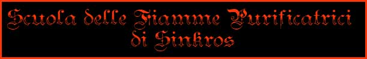
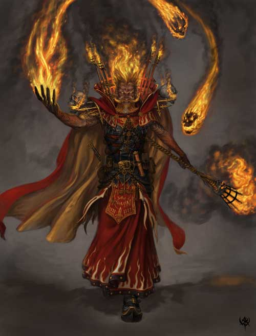
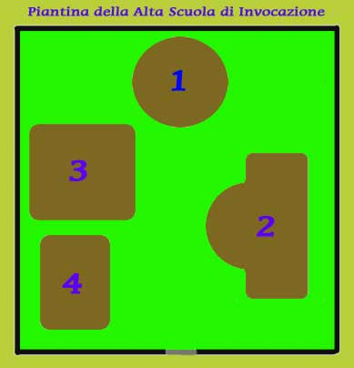
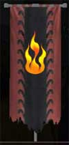
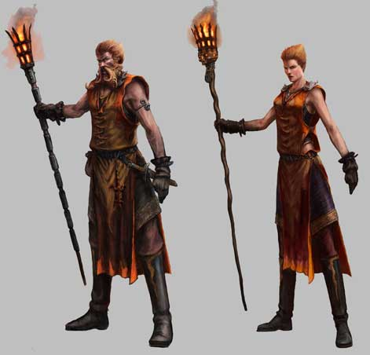
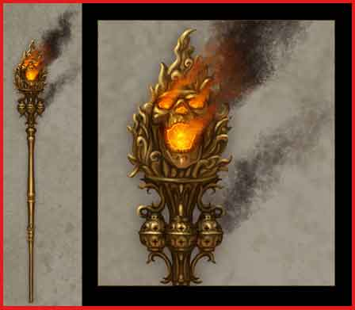

La Scuola delle Fiamme Purificatrici di Sinkros è l'accademia di magia più specializzata del Circolo del Potere rappresentando, per certi versi, il fiore all'occhiello della magia di origine umana ad Arelia. L'accademia è specializzata negli incantesimi della scuola di magia Evocation Fire e dei rispettivi piani di collegamento (Radiance, Smoke e Magma). Le magie sviluppate da questa scuola sono particolarmente dirompenti e distruttive. Il fuoco, subito seguito dalla luce, è l'elemento dominante delle magie dell'accademia. La tradizione vuole che, per lo stretto legame storico con il culto di Tanatos di questa accademia di magia, il fuoco sia visto come unico elemento purificatore in grado di epurare il mondo dalle forze maligne e dalle eresie. Non a caso, inoltre, si tratta dell'unica scuola di magia nella quale vi è un trattamento formale differenziato per i membri basato sulla loro fede religiosa. In particolare, i membri dell'accademia che sono Devoti Tanatiani ottengono un trattamento leggermente privilegiato rispetto a tutti gli altri membri. I maghi di questa accademia, dunque, sono conosciuti in tutto il continente di Arelia per essere gli utenti di magia che, per eccellenza, combattono contro le forze oscure riducendole in cenere con le loro magie.

L'unica sede della Scuola delle Fiamme Purificatrici nella capitale del Ducato di Southland, la città di Sinkros. Non a caso, la sede accademica è ubicata nelle strette vicinanze del palazzo degli Inquisitori del Vescovato di Tanatos il quale è solito chiedere la collaborazione dei maghi della vicina scuola di magia. Si tratta di un'enorme struttura formata da quattro edifici circondati da una cinta di mura alte 5 metri ed immersi in un rigoglioso giardino. La scuola per la sua struttura e magnificenza rappresenta una vera e propria cittadella dove i maghi fanno vita a parte trascorrendo spesso, all'interno delle mura della scuola, periodi di diversi mesi per ricercare e studiare le complesse formule magiche.

DESCRIZIONE DEGLI EDIFICI

1) La Torre della Fiamma: E' una grande torre circolare di otto piani, tutta costruita in mattoni rossi e culminante in un tetto a punta di tegole rosse dal quale domina lo stendardo con il simbolo della scuola rappresentato da una fiamma a tre punte su sfondo nero e rosso. La torre rappresenta uno degli edifici più caratteristici di Sinkros e può osservato quasi da tutti i punti della città. Nei primi quattro piani della torre è allocata l'amministrazione della scuola mentre nei quattro piani superiori vi è la residenza del Dominatore delle Fiamme Purificatrici e la sede del Consesso della Fiamma formato da costui e da tutti i Maestri del Fuoco Ardente della scuola. Il Consesso stabilisce le direttive e la politica accademica.
2)
Palazzo Fandàrion:
Enorme struttura che rappresenta l'edificio più grande della scuola di magia. I
maghi che hanno superato l'apprendistato come novizi possono risiedere
all'interno di questa struttura. All'interno di Palazzo Fandàrion, così
denominato in onore del fondatore dell'accademia di magia,
si svolge la gran parte della vita sociale dei maghi. Nel palazzo, infatti hanno
sede le tre taverne alle quali, a scelta, i maghi accademici possono accedere
liberamente durante il loro soggiorno (Alghe di Costa specializzato in pesce,
Il Forno Incantato
con cucina casereccia a base di vegetali ed
Il Cinghiale Bruciacchiato
specializzato in carne e
cacciagione). Sempre nel palazzo ha sede il negozio di magia
La Staffa Infuocata
direttamente gestito
dall'accademia presso il quale possono acquistarsi i componenti per gli
incantesimi accademici, libri, pergamene ed altri oggetti magici prodotti nella
scuola di magia.
3) Palazzo della Ricerca Magica :
E' un grosso edificio
di quattro piani, dove si trovano i laboratori avanzati, le librerie e dove i
maghi si recano per studiare la magia e sperimentare la creazione di nuovi
incanti ed oggetti magici.
4) Palazzo dell'Apprendistato : E' il palazzo ove studiano e vivono i novizi. Non hanno possibilità di girare liberamente per l'università e di uscire dal palazzo dove devono studiare. Qui i novizi ricevono i primi insegnamenti per divenire maghi.
ISCRIZIONE ALLA SCUOLA
Non è
facile divenire membri di questa scuola di magia. La selezione a cui sono
sottoposti i candidati è estremamente dura. Il corso per diventare maghi, dalla
durata triennale, ha un costo di
500 corone. Tenendosi un unico corso le ammissioni alla scuola avvengono ogni
tre anni essendo ammessi in tale data 100 nuovi novizi. I novizi che superano il
corso e diventano maghi (solitamente dal 30% al 40% degli ammessi) hanno
assicurato un futuro rispettabile, se non influente, all'interno del Ducato.
Tutti i maghi dell'accademia devono indossare una tunica dal coloro
rosso-arancio che ricorda il colore delle fiamme. La forma della divisa è libera
ma solo a partire dal rango Esperto delle Fiamme il mago può fregiare la sua
tunica con disegni di fiamme e fuoco.

Ogni anno tutti i maghi della Scuola, tranne i Novizi Invocatori, devono pagare una retta per aver accesso ai servizi della Scuola. La retta nonostante sia particolarmente cara consente al mago l'accesso gratuito molti servizi della scuola, permette al mago di risiedere, anche stabilmente, all'interno del Palazzo Fandàrion consentendo accesso gratuito allo stesso alle osterie ivi ubicate.
All'interno della scuola vige la seguente scala gerarchica fra i maghi:
APPRENDISTA PURIFICATORE
L'Apprendista Purificatore è lo studente novizio che, una volta superata la selezione e pagata la retta triennale di 500 corone, potrà seguire i corsi di apprendistato per divenire mago di questa scuola. La retta ha un costo politico ed in realtà molto inferiore al valore dei servizi offerti dalla scuola all'apprendista. La retta comprende sia gli insegnamenti che il vitto e l'alloggio presso il Palazzo dell'Apprendistato. La vita degli Apprendisti Purificatori è molto dura. Il periodo di apprendistato prevede lunghe ore di studio e la vita è rigidamente disciplinata come in un collegio durissimo con la previsione di poche ore in libera uscita giornaliere. Al termine del triennio vi è l'esame di magia, una volta superato questo esame gli apprendisti diventano maghi è si è nominati, nel corso di una cerimonia solenne alla quale partecipano anche autorità esterne alla scuola, al titolo di Novizio di Combustione Magica. Da quel momento in poi si è liberi di circolare nella Scuola tranne che nelle zone ristrette a determinati gradi ed occorre gestirsi la vita in modo autonomo. L'unico incantesimo insegnato agli Apprendisti Purificatori al termine dell'apprendistato è la magia Read Magic che, tra l'altro, rappresenta l'unica magia non della scuola di evocazione insegnata presso l'accademia.
REQUISITI PER DIVENIRE APPRENDISTA PURIFICATORE
Superamento della selezione per il corso di magia triennale.
RETTA POLITICA TRIENNALE
500 corone all'anno
LIVELLO DI POTERE A CUI SI HA LIBERO ACCESSO
Nessuno
NOVIZIO DI COMBUSTIONE MAGICA
Il Novizio di Combustione Magica è il mago di grado più basso di questa accademia di magia. Per pagarsi gli studi spesso questi maghi scrivono libri sulla magia o lavorano nei laboratori all'interno della scuola di magia. In base alla legislazione in vigore presso il Ducato di Southland il Novizio di Combustione è considerato cittadino comune ed è, allo stesso tempo, esentato dal versamento del contributo annuo di 10 corone alle casse dell'erario ducale.
REQUISITI PER DIVENIRE NOVIZIO DI COMBUSTIONE MAGICA
Superamento
dell'esame al termine del corso di apprendistato triennale.
Raggiungimento del 1° livello di esperienza.
RETTA ANNUALE
350
corone all'anno (300 corone se Devoto di Tanatos)
LIVELLO DI POTERE A
CUI SI HA LIBERO ACCESSO
1° Livello di Potere
STUDIOSO DI COMBUSTIONE MAGICA
Lo Studioso di Combustione Magica è un mago che ha raggiunto un certo livello di conoscenza delle magie di evocazione del fuoco. Per tale motivo viene considerato ormai un membro dell'accademia di magia a tutti gli effetti e la sua considerazione sociale nel Ducato inizia a salire. In base agli studi da costui effettuati, infatti, lo stesso dovrebbe essere in grado di utilizzare le energie dirompenti degli altri piani dimensionali per provocare già effetti di non trascurabile gravità nel Primo Piano Dimensionale.
REQUISITI PER DIVENIRE STUDIOSO DI COMBUSTIONE MAGICA
Raggiungimento del 3° livello di esperienza
Superamento della Prima Prova di Incenerimento Singolo
Ottenimento di un riconoscimento ufficiale del Circolo del Potere nella stesura dei libri sulla magia
RETTA ANNUALE
500 corone all'anno (425 corone se Devoto di Tanatos)
LIVELLO DI POTERE A CUI SI HA LIBERO ACCESSO
1° e 2° Livello di Potere
ESPERTO DELLE FIAMME
L'Esperto delle Fiamme e un mago che inizia ad assumere un certo peso sociale e politico. Costui, infatti, inizia ad ad essere temuto per i suoi poteri distruttivi e per la dirompenza dalla sua magia. Le sue conoscenze iniziano ad essere tali da poter essere in grado da solo di incenerire letteralmente anche diverse creature contemporaneamente. E' un potere non indifferente a cui si ricollega una nascente influenza politica destinata a crescere con il tempo.
REQUISITI PER DIVENIRE ESPERTO DELLE FIAMME
Raggiungimento del 5° livello di esperienza
Superamento della Prima Prova di Incenerimento di Massa
Creazione di una Pergamena Magica Vuota (Least Minor Enchantment) e donazione della stessa alla scuola di magia
Ottenimento di un Trofeo della Fiamma d'Argento
RETTA ANNUALE
750
corone all'anno (635 corone se Devoto di Tanatos)
LIVELLO DI POTERE A CUI SI HA LIBERO ACCESSO
1°, 2° e 3° Livello di Potere
CONOSCITORE DEI SEGRETI DELLA FIAMMA
Il Conoscitore dei Segreti della Fiamma è un mago temuto e rispettato. Da solo è in grado, scatenando le energie provenienti dagli altri piani dimensionali, di distruggere interi edifici, affondare navi ed incenerire interi gruppi di creature. Un tale potere deve essere saggiamente utilizzato anche per evitare che un tale individuo assuma troppa influenza nella società. Il loro peso politico inizia ad essere notevole ed il loro nome inizia ad essere conosciuto anche oltre i confini del Ducato di Southland.
REQUISITI PER DIVENIRE CONOSCITORE DEI SEGRETI DELLA FIAMMA
Raggiungimento del 7° livello di esperienza
Superamento
della Prova Avanzata di Incenerimento Singolo
Creazione di una Verga
del Risparmio di Energia Magica Minore
(Superior
Minor Enchantment)
e donazione della stessa alla scuola di magia
Ottenimento di un Trofeo della Fiamma d'Oro
RETTA ANNUALE
1250 corone all'anno (1050 corone se Devoto di Tanatos)
LIVELLO DI POTERE A CUI SI HA LIBERO ACCESSO
1°, 2° 3° e 4° Livello di Potere
MAESTRO DEL FUOCO ARDENTE
I Maestri del Fuoco Ardente sono i più potenti ed esperti studiosi della scuola di magia. I loro interventi sono sollecitati anche direttamente dalle più alte istituzioni politiche e religiose Duca o dalle altre importanti cariche politiche e religiose. Tali interventi sono molto cari ma spesso sono decisivi per eliminare pericoli che incombono sul Ducato od in altre zona di Arelia. Questi potenti maghi sono molto temuti e hanno grandi onorificenze politiche anche all'esterno del Ducato di Southland. I Maestri del Fuoco Ardente, inoltre, formano tutti insieme il Consesso della Fiamma ossia l'organo collegiale presieduto e convocato dal Dominatore delle Fiamme Purificatrici che, attraverso le sue decisioni, indirizza la politica accademica. Costoro, infine, acquisiscono di diritto il titolo di Maestri di Magia del Circolo del Potere.
REQUISITI PER DIVENIRE MAESTRO DEL FUOCO ARDENTE
Raggiungimento del 9° livello di esperienza
Superamento della Prova Avanzata di Incenerimento di Massa
Creazione di una Bacchetta Magica con Incantesimo di 1° livello 3° grado il cui insegnamento è previsto in questa accademia e donazione della stessa alla scuola di magia
Ottenimento di un Trofeo della Fiamma di Platino
RETTA ANNUALE
2000 corone all'anno (1700 corone se Devoto di Tanatos)
LIVELLO DI POTERE A CUI SI HA LIBERO ACCESSO
Accesso libero a tutti gli incantesimi insegnati dalla scuola
DOMINATORE DELLE FIAMME PURIFICATRICI
Il Dominatore delle Fiamme Purificatrici è uno dei Maestri del Fuoco Ardente che è stato nominato a tale ruolo come supremo rettore della scuola. Costui è scelto, con incarico conferito a tempo indeterminato, attraverso il voto espresso da tutti i Maestri del Fuoco Ardente nel Consesso della Fiamma (quando non si raggiunge una maggioranza sarà il Maestro più anziano di età a ricoprire tale incarico). L'incarico è onorario e chi lo riceve può, prima della fine di ogni anno, rinunciare allo stesso a partire dall'anno successivo. Il Dominatore delle Fiamme Purificatrici svolge un ruolo fondamentale all'interno dell'accademia in quanto costui, nel rispetto delle decisioni prese dal Consesso della Fiamma, amministra direttamente la scuola di magia ed i lavoro di tutti i dipendenti della stessa e svolge funzioni di alta rappresentanza per la scuola in tutte le cerimonie ufficiali e nella stesura di ogni accordo o convenzione. Ovviamente costui può delegare singolarmente le proprie funzioni di alta rappresentanza ai Maestri del Fuoco Ardente che prestino il loro consenso a coadiuvare, a titolo di mera cortesia, il Dominatore. Per il ruolo ricoperto e l'esperienza raggiunta costui è indubbiamente fra le personalità più in vista di tutto il Ducato di Southland se non del continente di Arelia. Costui è anche il rappresentante ufficiale della Scuola presso il Circolo del Potere. Il Dominatore delle Fiamme ha l'obbligo di risiedere, per tutto il suo mandato, nelle splendide stanze a lui riservate all'interno della Torre della Fiamma.
REQUISITI PER DIVENIRE DOMINATORE DELLE FIAMME PURIFICATRICI
RETTA ANNUALE
Il Dominatore è esentato per tutta la durata del suo mandato dal pagamento della Retta Annuale, inoltre costui riceve un onorario di 10.000 annue per il ruolo ricoperto.
LIVELLO DI POTERE A CUI SI HA LIBERO ACCESSO
Accesso libero a tutti gli incantesimi insegnati dalla scuola ad un costo ridotto del 50%
INSEGNAMENTO DELLA MAGIA
Principale campo di studi nella scuola è l'invocazione. Si tratta di una scuola molto costosa per cui i costi delle magie sono i più alti di Arelia.
 |
Maghi Interni : I maghi interni hanno accesso agli incantesimi insegnati dalla scuola e possono consultare i libri magici versando il prezzo di consultazione che varia a seconda dell'incantesimo prescelto e della tipologia di accesso ottenuta. L'accesso può essere libero o aggravato. L'accesso è libero per gli incantesimi del livello di potere al quale il mago ha libero accesso per il rango raggiunto nella gerarchia accademica. Per tali incantesimi il mago verserà il costo normalmente previsto; per tutti gli incantesimi di livello di potere superiore a quelli ai quali si ha accesso libero, invece, l'accesso del mago sarà aggravato e lo stesso dovrà versare il 50% in più del costo normalmente previsto per accedere a tali magie. Si noti che il pagamento permette al mago di studiare un'unica volta l'incantesimo prescelto. Qualora il mago non riesca ad imparare la magia e necessiti di studiare nuovamente dovrà versare di nuovo ed interamente il costo dell'incantesimo. Come in seguito specificato, però, esiste un'assicurazione che il mago può stipulare per evitare di pagare più volte l'accesso alle varie magie. |
Maghi Esterni : I maghi esterni del Circolo del Potere possono chiedere l'accesso alla scuola per studiare la magia, la richiesta di questo permesso va effettuata dalla Scuola di Magia o dal Maestro di origine che può porre delle condizioni allo studio del suo allievo. Presentare tale richiesta ha un costo di 100 corone, indipendentemente dall'esito della stessa. Sulla decisione decide direttamente il Dominatore delle Fiamme Purificatrici. La decisione è presa dopo un'attenta valutazione del mago richiedente, della suo curriculum (in particolare degli studi in precedenza effettuati), del suo status sociale e non per ultimo del suo credo religioso. Ottenere questo permesso di studio non è cosa facile e il permesso può contenere limitazioni come ad esempio ad alcuni livelli di potere, ad alcuni gradi di difficoltà, od ad alcuni specifici incantesimi. Uno volta ammesso, lo studioso di magia, oltre a pagare il normale costo degli incantesimi, dovrà versare un costo giornaliero per la sua presenza all'interno della scuola pari a 3 monete d'oro (in questo costo è compreso vitto ed alloggio presso il Palazzo Fandàrion) oltre ad un costo giornaliero per l'accesso ai libri magici dipendente dal livello di potere della magia che si accinge ad imparare (questo costo sarà versato solo per i giorni effettivamente dedicati ad imparare l'incantesimo) come specificato nella seguente tabella:
| LIVELLO DI POTERE | COSTO AL GIORNO SUPPLEMENTARE |
| 1° livello di potere | 4 monete d'oro |
| 2° livello di potere | 7 monete d'oro |
| 3° livello di potere | 12 monete d'oro |
| 4° livello di potere | 17 monete d'oro |
INCANTESIMI DELL'ACCADEMIA
PRIMO LIVELLO DI POTERE
| INCANTESIMO | SCUOLA PRIMARIA | GRADO | SCUOLA SECONDARIA | GRADO | COSTO |
| Read Magic | Divination | 1° | -- | -- | 100 |
| Flash | Evocation Radiance | 1° | -- | -- | 150 |
| Little Flaming Jet | Evocation Fire | 1° | -- | -- | 110 |
| Zolthan Lesser Mist | Evocation Smoke | 1° | -- | -- | 125 |
| Defensive Burst | Evocation Fire | 2° | Abjuration | 1° | 225 |
| Fire Burst | Evocation Fire | 2° | Alteration | 1° | 225 |
| Little Vortex of Fire | Evocation Fire | 2° | -- | -- | 275 |
| Alpha’s Starlight | Evocation Radiance | 2° | Illusion | 1° | 250 |
| Dancing Lights | Evocation Radiance | 2° | -- | -- | 190 |
| Magic Motes | Evocation Radiance | 2° | Abjuration | 1° | 275 |
| Mist | Evocation Smoke | 2° | -- | -- | 225 |
| Globes of Fire | Evocation Fire | 3° | -- | -- | 325 |
| Streams of Fire | Evocation Fire | 3° | -- | -- | 325 |
| Color Spray | Evocation Radiance | 3° | Charm | 2° | 375 |
| Alpha’s Sparkle Beam | Evocation Radiance | 3° | -- | -- | 300 |
| Light | Evocation Radiance | 3° | -- | -- | 350 |
| Sanh’s Ray of Light | Evocation Radiance | 3° | -- | -- | 300 |
| Wall of Fog | Evocation Smoke | 3° | -- | -- | 325 |
| Fire Spheres | Evocation Fire | 4° | -- | -- | 450 |
| Heat Mist | Evocation Smoke | 4° | -- | -- | 450 |
| Lesser Fire Blast | Evocation Fire | 4° | Abjuration | 1° | 500 |
| Magma Fall | Evocation Magma | 4° | -- | -- | 475 |
SECONDO LIVELLO DI POTERE
| INCANTESIMO | SCUOLA PRIMARIA | GRADO | SCUOLA SECONDARIA | GRADO | COSTO |
| Alpha’s Moonlight | Evocation Radiance | 1° | -- | -- | 200 |
| Ambient Light | Evocation Radiance | 1° | -- | -- | 200 |
| Spitfire | Evocation Fire | 1° | -- | -- | 225 |
| Alpha’s Star Flash | Evocation Radiance | 2° | -- | -- | 450 |
| Fellstar’s Flamehand | Evocation Fire | 2° | -- | -- | 400 |
| Flaming Rain | Evocation Fire | 2° | -- | -- | 500 |
| Wizard's Explosive Egg | Evocation Magma | 2° | -- | -- | 400 |
| Beam of Devotion | Evocation Radiance | 3° | -- | -- | 650 |
| Circle of Fire | Evocation Fire | 3° | -- | -- | 600 |
| Flaming Sphere | Evocation Fire | 3° | -- | -- | 600 |
| Improved Globes of Fire | Evocation Fire | 3° | -- | -- | 700 |
| Lesser Fire Surge | Evocation Fire | 3° | -- | -- | 675 |
| Continual Light | Evocation Radiance | 4° | -- | -- | 850 |
| Fire Blast | Evocation Fire | 4° | Abjuration | 1° | 1000 |
| Stinking Cloud | Evocation Smoke | 4° | -- | -- | 950 |
| Superior Fire Spheres | Evocation Fire | 4° | -- | -- | 900 |
TERZO LIVELLO DI POTERE
| INCANTESIMO | SCUOLA PRIMARIA | GRADO | SCUOLA SECONDARIA | GRADO | COSTO |
| Sinkros Sun Bolts | Evocation Radiance | 1° | -- | -- | 350 |
| Flaming Rainstorm | Evocation Fire | 2° | -- | -- | 700 |
| Melf’s Minute Meteors | Evocation Magma | 2° | -- | -- | 750 |
| Sinkros Minor Heat Ray | Evocation Radiance | 2° | -- | -- | 650 |
| Light Spheres of Ilvonor | Evocation Radiance | 3° | -- | -- | 950 |
| Magma Sphere | Evocation Magma | 3° | Alteration | 1° | 1050 |
| Minor Fire Surge | Evocation Fire | 3° | -- | -- | 1000 |
| Shadowfire | Evocation Fire | 3° | Alteration | 2° | 1150 |
| Tanatos Positive Globe of Light | Evocation Radiance | 3° | -- | -- | 900 |
| The Southern Vortex of Fire | Evocation Fire | 3° | -- | -- | 1100 |
| Wall of Light | Evocation Radiance | 3° | Abjuration | 1° | 1000 |
| Fireball | Evocation Fire | 4° | -- | -- | 1500 |
| Greater Fire Spheres | Evocation Fire | 4° | -- | -- | 1350 |
| Storm of Light | Evocation Radiance | 4° | -- | -- | 1200 |
QUARTO LIVELLO DI POTERE
| INCANTESIMO | SCUOLA PRIMARIA | GRADO | SCUOLA SECONDARIA | GRADO | COSTO |
| Cloud of Smoke | Evocation Smoke | 1° | -- | -- | 450 |
| Sinkros Improved Sun Bolts | Evocation Radiance | 1° | -- | -- | 500 |
| Sinkros Major Heat Ray | Evocation Radiance | 2° | -- | -- | 1000 |
| Cage of Fire | Evocation Fire | 2° | Abjuration | 1° | 1050 |
| Multitude of Flaming Spheres | Evocation Fire | 2° | -- | -- | 1100 |
| Wall of Fire | Evocation Fire | 3° | Abjuration | 1° | 1500 |
| Fandàrion Chain of Light | Evocation Radiance | 3° | -- | -- | 1400 |
| Fire Surge | Evocation Fire | 3° | -- | -- | 1250 |
| Razor’s Rotating Stone of Magma | Evocation Magma | 4° | Abjuration | 1° | 1850 |
Assicurazione del Saggio Evocatore : Si tratta di un prezzo aggiuntivo che il mago può pagare alla Scuola. Qualora lo paghi e non riesca ad imparare la magia studiata potrà consultare il libro magico nuovamente, fino a che non lo avrà imparato, senza dover ripagare alcuna somma. Il prezzo dell'assicurazione si basa sul costo della magia che si vuole imparare e varia al variare della differenza tra la bravura dello studioso (compreso l'eventuale apporto del maestro) e ed i gradi di difficoltà della magia come specificato nella seguente tabella:
| Nessun grado di differenza | 30 % del valore dell'incantesimo |
| + 1 grado di differenza | 60 % del valore dell'incantesimo |
| + 2 gradi di differenza | 120 % del valore dell'incantesimo |
| + 3 gradi di differenza | 180 % del valore dell'incantesimo |
| + 4 gradi di differenza | 240 % del valore dell'incantesimo |
ACCESSO AGLI INCANTESIMI ESTERNI
Per accedere agli incantesimi di altre scuole di magie il mago di questa accademia deve chiedere autorizzazione al Dominatore delle Fiamme Purificatrici. La domanda (che deve contenere le motivazioni ed il programma di studio) può essere presentata al costo di 100 corone. Il Dominatore delle Fiamme Purificatrici provvederà a richiedere il gradimento presso l'altra accademia (o maestro del Circolo del Potere) ed a valutare la richiesta analizzando il programma di studio. Ottenere il consenso allo studio di incantesimi presso altre scuole e/o maestri non è cosa facile. L'accademia è molto gelosa dei propri allievi. Il consenso di studio di una scuola secondaria può essere concesso ma molto difficilmente viene permesso al mago di studiare anche una terza scuola di magia. In ogni caso, al mago è fatto espresso divieto di imparare, per ogni livello di potere, un ammontare di gradi di difficoltà di incantesimi esterni che superi il 75% (arrotondato per difetto) dell'ammontare dei gradi di difficoltà di incantesimi interni complessivamente conosciuti dal mago. Questo calcolo sarà effettuato considerando solo i gradi di difficoltà della scuola principale dei vari incantesimi essendo ritenuti irrilevanti, in questo caso, i gradi di difficoltà della scuola secondaria. I gradi di difficoltà relativi agli incantesimi esterni ricercati, inoltre, non saranno considerati nell'ammontare dei gradi di incantesimi esterni conosciuti dal mago. Ad ogni modo, ogni volta che il mago studierò una magia all'esterno della scuola costui dovrà però versare un contributo alla propria scuola che varia a seconda del livello di potere e del grado di difficoltà dello stesso come espresso nella seguente tabella (il mago non è tenuto al pagamento di alcun contributo quando ricerca incantesimi esterni):
| 1° LIVELLO DI POTERE | 2° LIVELLO DI POTERE | 3° LIVELLO DI POTERE | 4° LIVELLO DI POTERE | 5° o + LIVELLO DI POTERE | |
| 1° GRADO | 10 | 25 | 75 | 150 | 375 |
| 2° GRADO | 20 | 50 | 150 | 300 | 750 |
| 3° GRADO | 30 | 75 | 225 | 450 | 1150 |
| 4° GRADO | 40 | 100 | 300 | 500 | 1500 |
Si noti che i Maestri del Fuoco Ardente ed il Dominatore delle Fiamme Purificatrici non hanno più alcuna limitazione sull'ammontare di incantesimi esterni che possono conoscere e non sono tenuti ad effettuare alcuna richiesta in merito alla scuola. Costoro dovranno però dichiarare, in rigorosa forma scritta, l'accesso alle magie esterne effettuato e saranno, in ogni caso, tenuti al pagamento del contributo previsto alle casse della scuola di magia per ogni incantesimo esterno imparato.
ALTRI SERVIZI FORNITI DALLA SCUOLA
VENDITA DI VERGHE DELLA STREGONERIA

La Scuola delle Fiamme Purificatrici di Sinkros produce anche verghe della stregoneria utilizzate dai suoi membri. Le verghe della stregoneria prodotte dalla scuola sono create unicamente infondendo loro energia magica della scuola Evocation, Piano di riferimento interno del Fuoco. L'accademia produce verghe della stregoneria inserendo incantamenti scelti dall'acquirente. Il costo della verga deve essere anticipato interamente all'Accademia. Tutte le verghe appena create posseggono 1d10+40 cariche. Per verificare il funzionamento delle verghe della stregoneria consultare il relativo regolamento (LINK). Per ordinare una verga della stregoneria e calcolarne il costo nonché il relativo tempo di attesa si seguano i seguenti passi:
1)
Selezionare la forma, il materiale ed il relativo costo della verga (link)
decidendo principalmente tra:
a)
Verga corta
b)
Verga lunga
Si tenga presente che, in
ogni caso, la Scuola non accetterà di lavorare
su verghe aventi valore negativo di possibilità di incantamento.
2)
Selezionare la scuola di magia base della verga tra:
a) Evocation,
Piano di riferimento
interno del Fuoco
3)
Aggiungere il costo dell'incantamento
magico minore obbligatorio (link):
*
Verga della Stregoneria
[Minor Enchantment (150 xp, 1000 gp)]
4)
Selezionare
l'eventuale
incantamento magico minore
concernente il risparmio di
energia magica (link):
*
Mantenimento Minore delle Cariche Magiche
[Lesser Minor Enchantment (100 xp, 500 gp)]
*
Mantenimento Maggiore delle Cariche Magiche
[Minor Enchantment (150 xp, 1000 gp)]
*
Verga del Risparmio di Energia Magica Minore
[Superior
Minor Enchantment (250 xp, 1500 gp)]
*
Verga del Risparmio di Energia Magica
[Greater
Minor Enchantment (375 xp, 3000 gp)]
*
Rod of Walking [Greater
Minor Enchantment (375 xp, 3000 gp)]
5) Selezionare gli
eventuali
poteri di incanalamento di
energia magica
da inserire nella verga della
stregoneria. Può essere selezionato un qualsiasi numero di poteri, aggiungere
interamente il valore in corone ed in xp del potere più costoso ed il 50% del
valore degli ulteriori poteri prescelti. I poteri di incanalamento di energia
magica sono i seguenti:
*
SOSTITUZIONE DI ENERGIA MAGICA
(+2.500 g.p., +300 xp)
*
ELEVAMENTO DEL LIVELLO DI
LANCIO (+2.500
g.p., +300 xp)
*
INCREMENTO DEL RAGGIO DI
AZIONE (+2.000
g.p., +250 xp)
*
INCREMENTO DELLA DURATA (+2.500
g.p., +300 xp)
*
POTENZIAMENTO DI ENERGIA MAGICA
(+2.000 g.p., +250 xp)
*
ABBASSAMENTO DELLE DIFESE
MAGICHE
(+2.000 g.p., +250 xp)
*
RIDUZIONE DELLA RESISTENZA
MAGICA (+1.500
g.p., +200 xp)
6)
Aggiungere eventualmente
un incantamento proprio della verga della stregoneria. Può essere seleziona
un unico potere magico proprio della verga tra quelli presenti nella
seguente lista. Il costo in corone ed il valore in punti esperienza del potere
deve aggiungersi interamente per determinare il valore finale dell'oggetto
magico.
Globe of Light
(+2.000 g.p., +200 xp)
Utilizzando 1 carica della
verga la parte superiore della stessa viene circondata da un globo di luce
bianca. La verga illuminerà di fredda luce bianca un'area di 9 metri di raggio
(si consideri come la luce di una lanterna o quella prodotta dalla magia
light). L'effetto dura fino a che il mago non decide di spegnere la
luminosità della verga o, comunque, fino a che non siano passate 24 ore
dall'accensione della stessa. Per spegnere la luminosità il mago deve utilizzare
le stesse regole utilizzate per attivare il potere proprio della verga con
l'unica eccezione consistente nel non dover spendere alcuna carica per lo
spegnimento.
Utilizzando 2 cariche della verga l'intensità della luce sarà più forte e
la verga illuminerà un'area di 12 metri di raggio (si consideri come se fosse
luce del giorno oppure luce prodotta dalla magia continual light).
Burning
Flame (+5.000 g.p., +500 xp)
Si noti che con questo potere
magico unico possono essere incantate solo le verghe della stregoneria che
abbiamo come scuola di magia base
Evocation, Piano di riferimento interno del Fuoco.
Quando questa verga viene impugnata da un mago lo stesso potrà decidere di far
divampare costantemente e per un periodo di tempo indeterminato fiamme nella
parte superiore della stessa. L'attivazione di questo potere richiede la
concentrazione del mago, componenti verbali (parola di attivazione) e somatici
nonché un casting time pari ad 1 round ma non consuma alcuna carica della verga.
Quando la verga è infiammata la stessa illuminerà con luce giallastra e rossa
(-1 al tiro per colpire) ad una distanza di 6 metri dal mago. Alla fine di ogni
round il mago potrà con una
free action far spegnere la
verga. Se, inoltre, per qualsiasi motivo il mago non impugna più la verga la
stessa si spegnerà immediatamente. Quando la verga è fiammeggiante la stessa può
essere utilizzata per attaccare in corpo a corpo provocando
5 danni da fuoco magico
alla creatura toccata (si tratta di
un vero e proprio potere magico utilizzabile a tocco).
Inoltre, sempre quando la verga è
fiammeggiante, il mago può, utilizzando
1 carica
della stessa, scagliare dalla verga una fiammata su una creatura che si trovi in
corpo a corpo con lui. L'utilizzo di questo potere necessita di concentrazione
ed è del tutto assimilabile al lancio di un incantesimo con componenti verbali
(parola di attivazione) e somatici avente
casting time
pari a +4. La vittima di questo attacco subirà
1d6+4 danni da fuoco magico
dimezzabili superando un tiro salvezza su riflessi. Utilizzando,
invece,
2 cariche
della verga, il mago potrà scagliare la medesima fiammata su un bersaglio che si
trovi entro 9 metri di distanza dallo stesso.
7) Calcolare il valore finale della verga in monete d'oro e punti esperienza sommando tutti i relativi addenti. Per calcolare il tempo di consegna (espresso in numero di giorni) della verga si utilizzi la seguente formula: [(1d12 *10 giorni)+(1 giorno ogni 50 monete d'oro di valore della verga)]. Si noti che l'intero prezzo della verga deve essere pagato al momento dell'ordinazione.
NEGOZI DI MAGIA
All'interno del palazzo Zhaida si trovano negozi specializzati per maghi invocatori. Sono tutti gestiti direttamente dalla Scuola.
La Vecchia Radice
Si tratta del negozio ove è possibile acquistare i componenti preparati per gli incantesimi dei maghi che si possono studiare nella scuola. Si tratta di reagenti di qualità superba che garantiscono la riuscita delle magie e sono conservati e pronti per essere lanciati. I prodotti in vendita sono i seguenti :
Zolfo (Streams of Fire,Spitfire): Lo zolfo è venduto in uno speciale corno di bue svuotato (isolandolo dall'umidità) e con un tappo di sughero che una volta rimosso permette di prendere rapidamente una dose senza sprechi. Vi sono due versioni quella piccola da borsa con 10 dosi (peso 2 lbs.) al costo di 15 corone e quella grande con possibilità di mettere il corno a tracolla con 30 dosi (peso 5 lbs.) al costo di 50 corone.
Ragnatele (Wimbly’s Wanderful Web, Web): Le ragnatele sono contenute in un piccola scatola di cartone, ogni dose necessaria è avvolta attorno ad uno stuzzicadenti la cui estremita fuoriesce dalla scatola per essere di facile utilizzazione. Lo scatolino continene 10 dosi e pesa 1/2 di libbra. Il costo è di 3 corone.
Mercurio (Tenser Floating Disc): Si trova in un'ampolla di rame nella cui estremità vi è un piccolo foro di uscita con un tappo di sughero, all'altra estremità invece si trova un cappuccio di resina e stoffa che quando viene premuto spinge fuori una dose di mercurio. Il mercurio basta per 5 dosi il peso dell'ampolla è di 1 libbra e il costo è di 50 corone.
Piselli secchi (Wall of Fog): Sono venduti in una piccolo sacchetto di lino chiudo da una cordicella di canapa nel sacchetto ci sono 6 dosi, il peso e' pari a 1/2 libbra e il costo è di 2 corone.
Prisma Minerale (Read Magic): Si tratta di un purissimo prisma minerale di quarzo che e' stato tagliato e ripulito per poter essere usato senza interferenze, il peso è di 1/2 libbra è contenuto in un sacchetto di velluto blu e costa 105 corone.
Piccolo Prisma (Hornung's Baneful Deflector) : E' un prisma di bronzo riccamente adornato e rifinito, la precisione geometrica di costruzione e' molto accurata. Sono venduti in un sacchetto di velluto che contiene 5 prismi per un peso di 1 libbra e un costo di 12 corone.
Pietra Lunare esposta alla luce della luna piena (Alpha's Moonlight) : Questa grossa pietra preziosa è contenuta in una piccola sacca di velluto bianco, il peso è pari a 1/2 libbra e il costo è di 60 corone.
Piccolo quarzo blu (Alpha's Rainbow Beam) : Sono quarzi dal colore blu o azzurro chiaro ripuliti e tagliati. Si trovano in un sacchetto di velluto a strisce gialle e nere. Nel sacchetto dal peso complessivo di 1 libbra si trovano 4 quarzi per un costo pari a 48 corone.
Misto di lardo, zolfo e polvere di ferro (Flaming Sphere) : In una scatola di legno cilindrica con tappo a vite è contenuta questa mistura pronta per essere prese ed utilizzata. La scatola contiene 10 dosi pesa 2 libbre e è venduta ad un costo di 25 corone.
Foglie di cavolo ammuffite (Stinking Cloud) : Ogni dose è contenuta in fogli di pergamena chiusi per evitare la fuoriuscita della puzza. Al momento del lancio il mago strappa la pergamena e ne fa uscire il contenuto ammuffito. Ogni singola dose pesa 1/10 di libbra e costa 1 corona.
Piccoli limoni freschi (Artas Acidballs): Avvolti in una rete da pescatore che possiede anche un gancio per permettere alla stessa di essere attaccata ad una cintura o ad uno zaino. I limoni sono trattati con una sostanza alchemica che ne ritarda la maturazione, possono essere usati fino a 3 mesi dopo l'acquisto. Nella rete ci sono 6 limoni per un peso complessivo di 2 libbre e un costo di 3 corone.
Tubo d'oro riccamente lavorato (Melf's Minute Meteors): Si tratta di un tubo d'oro lungo 30 cm. riccamente intarsiato, miscelato con polvere gemme preziose e con il manico di avorio. Il peso del tubo è pari a 1 libbra e il suo costo è di 1200 corone.
Pallina di nitre,zolfo e catrame di pino (Melf's Minute Meteors) : In una scatolina di legno con apertura a scorrimento sono contenute 5 palline già miscelate nella giusta dose e amalgamate, il peso complessivo è di 1 libbra e il costo 16 corone.
Pezzo di vetro (Sinkros Minor Heat Ray) : Questo grosso pezzo di vetro quadrato è stato smussato e levigato a tutte le estremità per impedire che il mago si tagli lanciando la magia, poi è stato avvolto in una pelle animale chiusa da un piccolio laccio di canapa dal nodo estremamente facile da scioglere. Sono venduti singolarmente, il peso è pari a 1/2 libbra e il costo è di 11 corone.
Pezzo di specchio (Sinkros Major Heat Ray) : Questo grosso pezzo di specchio circolare è stato smussato e levigato a tutte le estremità per impedire che il mago si tagli lanciando la magia, poi è stato avvolto in una pelle animale chiusa da un piccolio laccio di canapa dal nodo estremamente facile da scioglere. Sono venduti singolarmente, il peso è pari a 1/2 libbra e il costo è di 25 corone.
Forte acido corrosivo (Fellstar Trollkiller) : Data l'estrema potenza dell'acido richiesto questo e' contenuto in un'ampolla di vetro, si tratta di un'ampolla cilindrica stretta e lunga dal basso potenziale magico ( 100 xp ) che rende il vetro elastico in modo tale da essere più resistente alla rottura, inoltre è possibile che venga strizzato, quando ciò viene fatto, e solo in questo momento, da una estremità il cui colore è viola fuoriesce la dose di acido richiesta. L'ampolla pesa 1 libbra e contiene fino a 10 dosi, può essere riempita all'accademia. Il costo dell'ampolla è di 250 corone mentre ogni dose di acido costa 20 corone.
Argento puro in polvere (Tanatos Positive Globe of Light) : In una piccola sacca di velluto argentato è contenuta questa polvere di argento purissima. Nella piccola sacca ci sono 5 dosi, il peso e' di 1 libbra e il costo è di 26 corone.
Fiasca di olio silveriano (The Southern Vortex of Fire) : Si tratta di una fiaschetta di rame riccamente adornata che contiene l'olio silveriano, è un olio di originario della città di Silveria in grado di bruciare rapidamente e intensamente (è estremamente incendiario se versato su una creatura e acceso provocherà il primo round 2d4 danni da fuoco e il secondo e il terzo round ulteriori 1d4 danni). La fiasca valida per una dose pesa 1 libbra e costa 26 corone.
Gemme bianco latte (Wall of Light) : Sono delle gemme tutte accumunate dal colore bianco come il latte senza alcuna macchia di altro colore, sono di diverse dimensioni e sono vendute singolarmente, il peso è di 1/10 di libbra e il costo è pari a 110 corone.
Palla di guano di pipistrello e zolfo (Fireball) : Queste palle larghe 5 cm. già preparate e impastate sono tenute chiuse da un laccio di cuoio facile da rimuovere. Il peso è pari a 1/5 di libbra per palla, sono vendute singolarmente e il costo è pari a 2 corone.
Quarzo di fiume trasparente (Heavy magic missile) : E' un quarzo dai riflessi verdognoli che si trova nei letti dei grandi fiumi, è levigato dall'acqua ed è stato sottoposto a pulitura e lucidatura, venduto singolarmente ha un peso di 1/10 di libbra e un costo di 55 corone.
Boccetta di acqua di tempesta (Zhaida's Great Tunder) : In una boccetta di rame è contenuta la dose singola per questa magia. Si tratta di acqua piovana raccolta solo nel mezzo delle maggiori tempeste. Il peso è pari a 1 libbra e il costo pari a 3 corone.
La Fiamma Magica
E' un negozio di oggetti magici che offre vari servizi e dove è possibile acquistare e prenotare oggetti magici di produzione dei laboratori magici della scuola stessa. I servizi sono i seguenti :
Analisi degli oggetti magici :
E' effettuata tramite incantesimi divinatori. Possono essere acquistati a prezzo del Circolo del Potere gli incantesimi :
Indaral's Fluid Identification : A livello 5° (50 % di successo) per un costo pari a 66 corone, a livello 7° (70 % di successo) per un costo pari a 88 corone e a livello 9° per un costo pari a 118 corone (90% di successo).
Identify : Al costo di 1000 corone per oggetto o sua funzione.
Acquisto di oggetti magici :
E' possibile vendere all'Accademia oggetti magici, solitamente sono acquistati ad un prezzo compreso tra il 70 e l'80% del loro valore di mercato se in perfette condizioni. L'accademia stanzia un fondo massimo pari a 5000 corone al mese per l'acquisto di oggetti magici di regolare interesse.
Vendita di oggetti magici :
L'Accademia inoltre vende oggetti magici di propria creazione. I pagamenti sono sempre effettuati al momento della stipulazione del contratto anche se anni prima della consegna. L'Accademia conserva nei suoi magazzini magici alcuni oggetto magici pronto per la vendita, troverete indicato quando ciò avviene), la possibilità che un personaggio trovi questo oggetto disponibile per essere venduto (che non sia stato quindi già venduto) è pari al 70 %, qualora questo tiro non riesca il personaggio dovrà necessariamente aspettare il tempo richiesto.
Incantamento di un'arma o corazza o scudo a fattore magico + 1 : Il costo del procedimento magico di incantamento di sicura riuscita è pari a 5000 corone (siccome in base allo stesso singolo procedimento è possibile incantare più proiettili, come segnato tra parentesi dopo ogni tipo, il loro costo scende ed è il seguente (ogni proiettile magico ha normali possibilità di essere reso inutilizzabile dopo il lancio) : freccia da caccia (60) 80 corone, freccia da guerra (40) 120 corone, dardo da mano (80) 64 corone, dardo leggero (40) 120 corone, dardo pesante (30) 160 corone, sasso per fionda (100) 48 corone, proiettile per fionda (80) 64 corone ) alle quali va aggiunto il prezzo dell'oggetto che si vuole fare incantare, se si tratta di un'arma questa dovrà essere almeno di qualità superba ( 15 volte il valore base ), se si tratta di uno scudo o una corazza dovrà essere almeno di eccellente fattura (+ 50% del valore). Se invece sono portati per essere incantati oggetti che sono reputati di più facile incantamento il costo può scendere fino a 3000 corone. Il tempo di consegna è pari a 2 +1d10 mesi, in alcuni casi è possibile acquistare oggetti magici + 1 già pronti pagando una maggiorazione di 1000 corone, l'Accademia ha sempre a disposizione uno dei seguenti oggetti per tipo : Spada Lunga +1, Dagger +1, Stiletto +1, Mace +1, Spada Corta +1, Quarterstaff +1, una faretra di frecce da guerra 8 frecce e una da caccia con 12 frecce +1, Chain Mail +1, Corazza di Piastre +1, Scudo +1.
Incantamento di un'arma o corazza o scudo a fattore magico + 2 : Il costo del procedimento magico di incantamento di sicura riuscita è pari a 10000 corone (siccome in base allo stesso singolo procedimento è possibile incantare più proiettili il loro costo scende ed è il seguente (ogni proiettile magico ha normali possibilità di essere reso inutilizzabile dopo il lancio) : freccia da caccia (12) 180 corone, freccia da guerra 270 corone, dardo da mano 144 corone, dardo leggero 270 corone, dardo pesante 360 corone, sasso per fionda 135 corone, proiettile per fionda 144 corone ) alle quali va aggiunto il prezzo dell'oggetto che si vuole fare incantare, se si tratta di un'arma questa dovrà essere almeno di qualità superba ( 15 volte il valore base ), se si tratta di uno scudo o una corazza dovrà essere almeno di eccellente fattura (+ 50% del valore). Se invece sono portati per essere incantati oggetti che sono reputati di più facile incantamento il costo può scendere fino a 3000 corone. Il tempo di consegna è pari a 12 + 2d6 mesi, in alcuni casi è possibile acquistare oggetti magici + 2 già pronti pagando una maggiorazione di 2000 corone, l'Accademia ha sempre a disposizione uno dei seguenti oggetti per tipo : Spada Lunga +2, Stiletto +2, Mace +2, una faretra di frecce da guerra 8 frecce e una da caccia con 12 frecce +2, Scudo +2.
Ring of protection + 1 : Il costo è di 7000 corone, il tempo di attesa è pari a 3 +1d12 mesi, ma l'accademia ha sempre uno di questi anelli pronti per la vendita al prezzo di 8000 corone.
Ring of protection + 2 : Il costo è di 15000 corone, il tempo di attesa è pari a 12 +3d6 mesi, ma l'accademia ha sempre uno di questi anelli pronti per la vendita al prezzo di 18000 corone.
Wand of Magic Missile (100 cariche, xp 2000) : Il costo è di 18000 corone, può essere ricaricata, il tempo di attesa è pari a a 12 + 2d12 mesi, ma l'accademia ha sempre uno di queste bacchette pronte per la vendita al prezzo di 20000 corone.
Wand of Fire (100 cariche, xp 4500) : Il costo è di 36000 corone, può essere ricaricata, il tempo di attesa è pari a a 15 + 3d12 mesi, ma l'accademia ha sempre uno di queste bacchette pronte per la vendita al prezzo di 42000 corone.
Wand of Heat (100 cariche, xp 3000) : Il costo è di 25000 corone. Si tratta di una bacchetta costruita solo nella scuola di Sinkros per cui estremamente caratteristica. Può lanciare (sempre a casting time 5) al costo di 1 carica Sinkros Minor Heat Ray e al costo di 2 cariche Sinkros Mayor Heat Ray, può essere ricaricata, il tempo di attesa è pari a a 12 + 3d12 mesi, ma l'accademia ha sempre uno di queste bacchette pronte per la vendita al prezzo di 28000 corone.
Wand con spell di Invocazione (tutte hanno 100 cariche e lanciano lo spell come se fosse lanciato da un mago del 6° livello, per ogni utilizzo consumano una carica e possono essere ricaricate, hanno un casting time superiore di +1 rispetto a quello richiesto dallo spell) : Le bacchette che possono essere acquistate sono le seguenti :
|
INCANTESIMO |
XP |
COSTO in corone |
MESI di attesa |
|
Force Bolt |
800 |
6000 |
2 + 1d12 |
|
Streams of Fire |
1500 |
10000 |
5 + 1d12 |
|
Jet of Steam |
1000 |
8000 |
3 + 1d12 |
|
Lightning Lesser Bolt |
1600 |
12000 |
5 + 1d12 |
|
Fireball |
2500 |
22000 |
10 + 2d12 |
Ring of Shielding (40 cariche, xp 1800): Costo 12000 corone. Attraverso questo anello è possibile lanciare (può essere usato da qualsiasi classe) come un mago del 12° livello l'incantesimo Shield (1 carica) o Superior Shield (2 cariche). Entrambi con un fattore di iniziativa pari a + 3. Per ottenere il lancio della magia dell'anello occorre mantenere la concentrazione, il tempo di attesa è pari a a 12 + 2d6 mesi, ma l'accademia ha sempre uno di questi anelli pronti per la vendita al prezzo di 15000 corone.
Verga del Fulminatore (new magical item) (50 cariche, xp 2000): Costo 15000 corone, il tempo di attesa è pari a a 15 + 2d6 mesi, ma l'accademia ha sempre uno di queste verghe pronte per la vendita al prezzo di 18000 corone.
ACCESSO AI LABORATORI DI MAGIA
Nel palazzo di magia vi sono i laboratori magici della scuola e le librerie magiche. E' permesso l'accesso ai laboratori della scuola a pagamento ai soli maghi iscritti alla scuola o a coloro abbiano ricevuto un permesso speciale. Il prezzo per l'accesso all'intero palazzo è pari a 5 corone al giorno, inoltre la scuola deve essere a conoscenza del progetto magico eseguito dal mago e può chiedere che costui non si riservi la conoscenza delle nuove scoperte effettuate (ovviamente se la scuola sia interessata e dietro compenso previamente pattuito).Nel palazzo è possibile utilizzare le seguenti infrastrutture:
1) Laboratorio professionale per la creazione di oggetti magici e per la ricerca degli incantesimi.
2) Libreria generale per la ricerca di incantesimi di 150 volumi (fino al 7° livello di potere).
3) Libreria supplementare generica di 8 volumi (fino al 5° livello di potere).
4) Libreria supplementare specifica invocation/evocation di 8 volumi (fino al 5° livello di potere).
5) Libreria per la creazione di oggetti magici molto fornita di 200 volumi.
6) Libreria per la creazione di oggetti magici specifica per le bacchette magiche di 10 volumi.
LA SALA DEI PATTERN
Nel Palazzo Zhaida si trova una particolare sala circolare. E' una grossa sala con al centro un bancone circolare di marmo bianco che ha uno spazio centrale. Lungo il perimetro della sala si trovano invece i pattern di trasporto per alcune Accademie di Magia Areliane. Al centro del bancone ci sono i burocrati dell'accademia che nei loro libri contabili annotano tutti i movimenti di cose e persone che avvengono attraverso i pattern, oltre i burocrati dell'Accademia sono presenti anche alcuni Ufficiali di Sicurezza Ducale che prendono note ed possono eseguire controlli sulle persone in entrata ed in uscita. L'Accademia fornisce il servizio di utilizzo dei pattern (si tratta di pattern magici che resistono al calore sprigionato dalla magia) e di lancio della magia di trasporto (Ilvonor Pattern Teleport) con una prenotazione che deve avvenire almeno 1 giorno prima di quello di partenza. Il costo di utilizzo di un qualsiasi pattern è pari a 20 corone. I pattern a disposizione sono i seguenti :
Accademia dei Nove Saggi, Regno di Tarsis, Città di Tarsis : Il pattern di arrivo è situato al palazzo dell'Accademia dei Nove Saggi di Tarsis al centro della capitale del Regno di Tarsis. Il costo di utilizzo del pattern di arrivo è di 15 corone.
Accademia Fellstar, Granducato di Trisengar, Città di Artas : Il pattern è situato in un apposito edificio del complesso dell'Accademia Fellstar su una collina della magia nelle immediate adiacenze della capitale Artas ( 3-4 ore di cammino). Il costo di utilizzo del pattern di arrivo è di 18 corone.
Circolo dei Summoner di Pergar, Città di Pergar, Impero Scuro : In base ad una legge imperiale tutti i pattern che conducono all'estero sono situati nella Rocca del Contatto. In tale struttura, appositamente costruita sono contenuti tutti i pattern (almeno i legali) che conducono oltre i confini dell'Impero Scuro. I controlli effettuati sulle merci e i viaggiatori sono severissimi e non è raro che a persone non gradite non sia consentito una volta giunte di lasciare la Roccaforte. La Rocca del Contatto si trova in vista delle mura della città di Pergar a circa 1 giorno di cammino (7-8 ore di marcia). Si noti che è possibile lasciare la Roccaforte unicamente la mattina (se si giunge oltre la tarda mattinata si è costretti ad attendere nella Rocca il giorno successivo. Il costo di utilizzo del pattern di arrivo è di 15 karsi.
Tre Torri di Divinazione Silveriane, Città di Silveria, Repubblica Silveriana : Il pattern è situato nella grande torre centrale di divinazione nella città di Silveria coloro che non sono cittadini silveriani sono accolti dal Ufficio Consolare Estero che si prende cura della registrazione dei nuovi venuti. Il costo di utilizzo del pattern di arrivo è di 20 dischi.